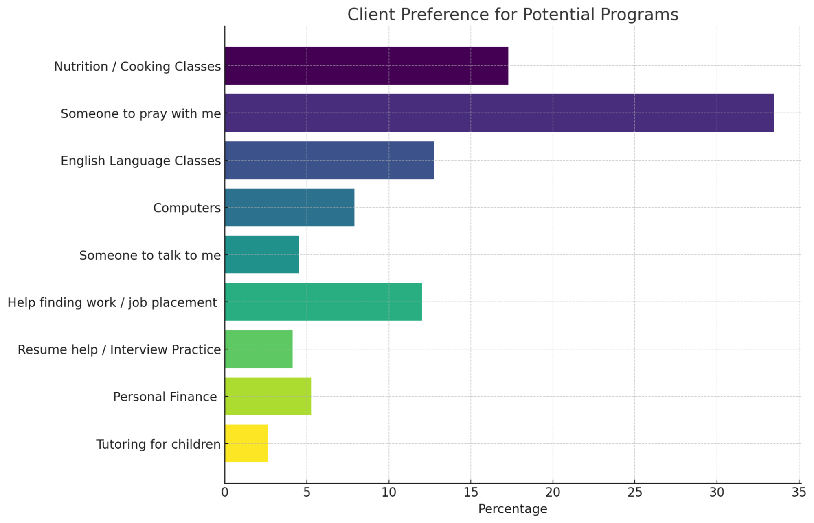
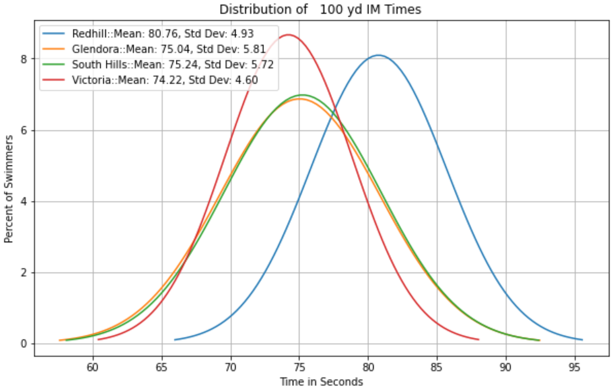

Hi, I’m Matthew Waddell
Data Analyst / Financial Analyst
Highly analytical professional with a bachelor’s degree in computer science and mathematics. Proficient in managing all aspects of data and financial analytics. Currently seeking an actuarial or similar role in the financial industry.
Skilled in leveraging data analytics and business intelligence tools to drive actionable insights and improve operational efficiency. Adept at designing and implementing complex data models, conducting statistical analyses, and developing predictive models to support data-driven decision-making. Ability to translate complex data sets into strategic recommendations that align with business objectives. Capable of collaborating with cross-functional teams to solve challenging problems and deliver impactful solutions.
Areas of Expertise
Education
Harvey Mudd College, Claremont, CA
Actuarial Associateship in Progress
- Exam P (Probability) – Passed
- Exam FM (Financial Mathematics) – Passed
- Exam SRM (Statistics for Risk Modeling) – Scheduled
Professional Experience
Family Caregiver
Managed full-time care for a family member:
- Coordinated and scheduled medical appointments and treatments while independently pursuing actuarial credentials
- Created and implemented daily routines to ensure tasks were completed and schedules met
- Developed strong organizational, time management, and problem-solving skills under pressure
Math Tutor, Upward Bound
Provided academic support in Math to a diverse group of students, fostering enhanced understanding and improved academic performance. Collaborated with educational staff to assess and promote student development and success. Developed an innovative approach to teaching math that increased student engagement.
- Managed and tutored a cohort of 10 students, contributing to their academic milestones
- Administered tailored lesson plans that cater to individual learning needs, ensuring progress towards academic goals
Data Analytics Intern, Shepherd’s Pantry Food Bank
Aggregated and interpreted data from multiple sources to discern trends in client usage and satisfaction at three food bank locations. Fostered community relations and enhanced client engagement through consistent volunteer service in food distribution efforts. Synthesized findings into a strategic analytics report for the Executive Director to inform and optimize client service delivery. Collaborated with cross-functional teams to ensure data accuracy and relevancy.
- Identified opportunities for service improvement and efficiency enhancements through advanced data analytics techniques
- Delivered a detailed analytics report that led to targeted improvements in client services
- Volunteered weekly, building strong relationships with clients and gaining insights into community needs
- Enhanced data collection methods, leading to more accurate and actionable insights for the organization
Swim Coach | Lifeguard
Projects
Humans vs. Zombies Mobile App
Flutter mobile application built with fellow Harvey Mudd students for the Claremont Colleges’ HvZ competition.
View project →
Shepherd’s Pantry Data Analysis
Survey analysis, ML modeling, and Census data comparisons for a Los Angeles food bank.
View project →
Swim Coach Data Analysis
Statistical analysis of swim team and individual performance to guide coaching decisions.
View project →